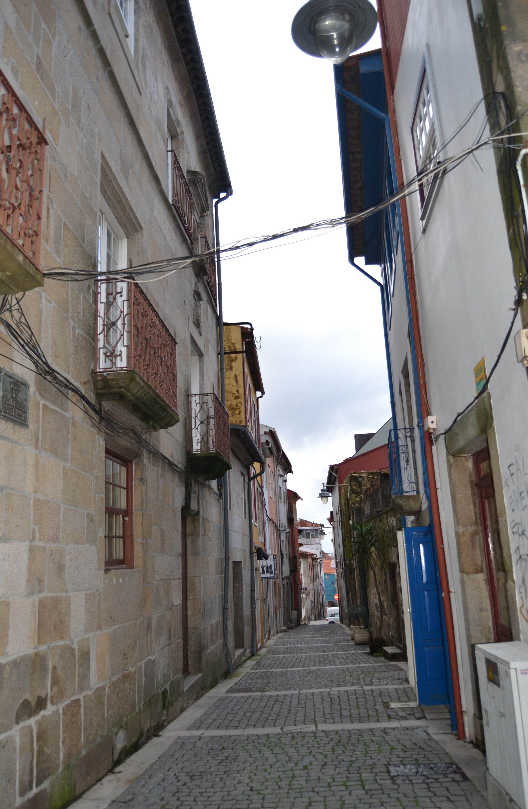
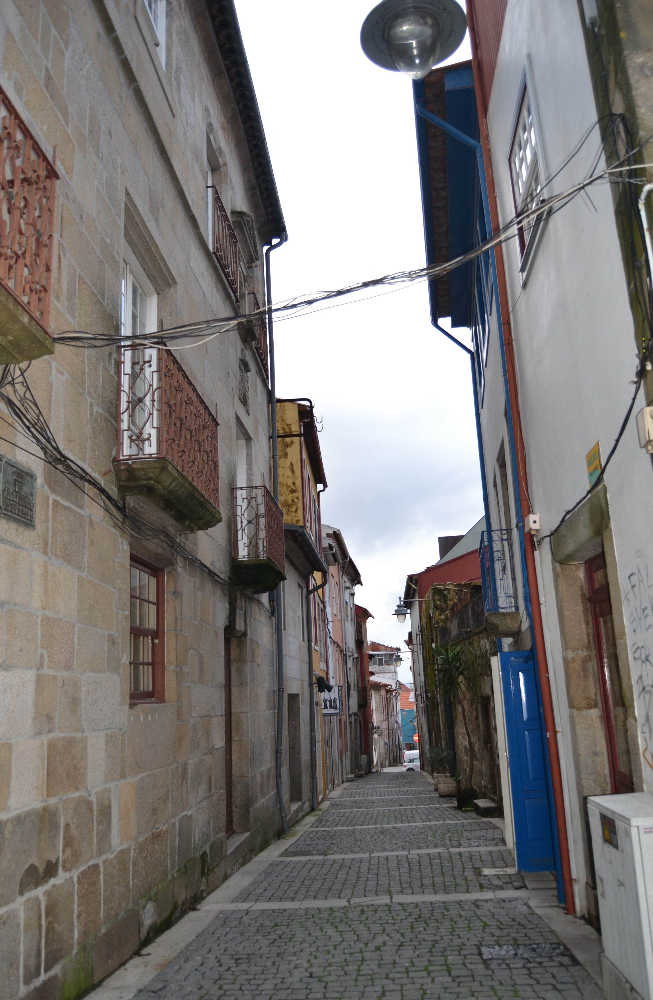

Pequena rua, que ligava a rua das Travessas com o Terreiro de Santo António. De raiz romana, não sabemos qual teria sido a sua função na cidade medieval.
Em 1465 são transferidos para aqui os judeus e instalados no prédio mais interessante que hoje aqui resta, e um dos mais estimáveis de toda a cidade, passando a ser denominada de Judiaria Nova. Esta casa veio depois a pertencer ao cónego João de Meira Carrilho, que lhe pôs as suas armas.
No final de quatrocentos, com a obrigação que os judeus sofreram de abjurar a sua religião passou a ser chamada de Sto. António, nome que se mantém.
Das 3 casas medievais que se vêem no alçado Nascente nada resta hoje infelizmente (uma já estava em adiantada ruína). Do lado Poente conservam-se algumas casas, ainda. É curioso notar que as suas construções têm um tipo de acabamento e proteção de janelas bem mais cuidado que a rua que lhe era sequente, a das Chagas.
Esta artéria, que felizmente ainda hoje conserva o seu traçado original, tinha 7 casas do lado Nascente e 15 do Poente, sendo 6 e 11, respectivamente, prazos do Cabido.
--- Enfiteuta: Francisco Soares de Novais, abade de S. Vicente do Bico
--- Foro: 290 reis e 2 galinhas
--- Descrição:
Encontram-se unidas, num só prazo, desde o ano de 1591. Possuem frontaria para a travessa que vem da Rua de D. Gualdim para esta rua.
--- Enfiteuta: José da Cunda e Sousa
--- Foro: 1420 e 4 galinhas
--- Descrição:
Encontram-se unidas, num só prazo, desde o ano de 1524.
--- Enfiteuta: Padre Miguel de Abreu
--- Foro: 170 reis e 6 galinhas
--- Descrição:
Não existe descrição para esta casa.
--- Enfiteuta: Padre Miguel de Abreu
--- Foro: 90 reis e 2 galinhas
--- Descrição:
Não existe descrição para esta casa.
--- Enfiteuta: Francisco Gonçalves Coudo, casado com Josefa Maria Madureira
--- Foro: 150 reis e 4 galinhas
--- Descrição:
Encontram-se unidas, num só prazo, desde o ano de 1592.
--- Enfiteuta: Felícia Teresa, viúva de Luís de Barros
--- Foro: 300 reis e 2 galinhas
--- Descrição:
Não existe descrição para esta casa.
--- Enfiteuta: António Coelho, abade de S. Martinho de Alvito
--- Foro: 410 reis
--- Descrição:
Possui frontaria para o rossio ou terreiro de Sto. António, com o qual confronta do sul.
--- Enfiteuta: Os herdeiros de Miguel de Araújo Barreto, tenente
--- Foro: 350 reis e 2 galinhas
--- Descrição:
Não existe descrição para esta casa.
--- Enfiteuta: Agostinho Marques do Couto, cónego
--- Foro: 1360 reis e 4 galinhas
--- Descrição:
Estas casas (denominadas «Casas Torres»), encontram-se unidas, num só prazo, desde o ano de 1697. Na casa n.º 12, onde foi colocada a imagem de Sto. António, (antes de 1502), funcionou a antiga sinagoga.
--- Enfiteuta: Agostinho Marques do Couto, cónego
--- Foro: 350 reis e 2 galinhas
--- Descrição:
Confronta, do norte, com casa foreira ao mosteiro de Bouro.
--- Enfiteuta: Padre Agostinho de Araújo Álvares
--- Foro: 240 reis e 2 galinhas
--- Descrição:
Não existe descrição para esta casa.
--- Enfiteuta: Padre Agostinho de Araújo Álvares
--- Foro: 420 reis e 2 galinhas
--- Descrição:
Não existe descrição para esta casa.
--- Enfiteuta: Os herdeiros de João Luís Moreira, boticário
--- Foro: 445 reis e 2 galinhas
--- Descrição:
Não existe descrição para esta casa.
--- Enfiteuta: Os herdeiros de João Luís Moreira, boticário
--- Foro: 180 reis e 1 galinha
--- Descrição:
Não existe descrição para esta casa.
--- Enfiteuta: Padre Manuel de Chaves
--- Foro: 430 reis e 2 galinhas
--- Descrição:
Não existe descrição para esta casa.
--- Enfiteuta: António de Lima e Abreu
--- Foro: 220 reis e 2 galinhas
--- Descrição:
A casa n.º 22 confronta, do norte, com a travessa que vem da Rua de D. Gualdim.
--- Enfiteuta: António de Lima e Abreu
--- Foro: 520 reis e 2 galinhas
--- Descrição:
A casa n.º 22 confronta, do norte, com a travessa que vem da Rua de D. Gualdim.
--- Enfiteuta: António de Lima e Abreu
--- Foro: 440 reis e 2 galinhas
--- Descrição:
A casa n.º 22 confronta, do norte, com a travessa que vem da Rua de D. Gualdim.
 Vista 2:

Vista 2:

 Rua de Sto. António - poente
Rua de Sto. António - poente